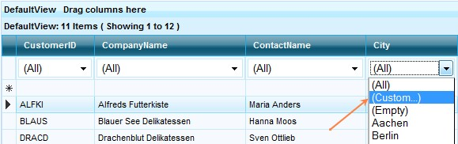
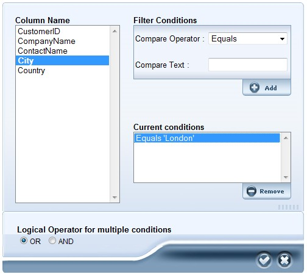

TableDescriptor.TopLevelGroupOptions.ShowFilterBar property specifies whether or not Filter Bars should be shown for a specific table in the grid.
Custom Filtering

Figure 78
Clicking the 'Custom' option in the filter dropdown, pops-up the Custom Filter dialog that lets you set advanced filter conditions.

Figure 79
This option helps to customize the Filter with logical operations provided with strings. Multiple Conditions can be achieved with this option.